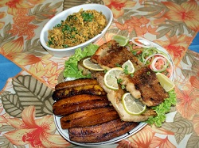

Culianaria Tipica do Acre
O estado do Acre possui uma grande mistura cultural de povos brasileiros, principalmente indígenas e nordestinos, além de também ter influência boliviana. Essa mistura pode ser percebida na culinária do Acre, com temperos e receitas típicas do Nordeste, mas também muito do sabor e ingredientes típicos da Região Norte. Por conta da grande quantidade de rios, os peixes são um dos principais ingredientes, mas há muito mais que o Acre pode oferecer gastronomicamente.
Tambaqui Acreano
Os peixes são o carro forte da culinária acreana. São diversas as receitas com carne branca que encontramos não só no Acre, mas em toda a Região Norte. A receita do tambaqui acreano já foi premiada e usa as costelas do peixe.
Ingredientes
1 colher (sopa) de Açúcar refinado União
2 colheres (sopa) de Farinha de tapioca
Gengibre à gosto
1 colher (sopa) de Margarina com sal light Qualy Sadia
500gramas de Peixe tambaqui filé cru
100 mililitros de Vinagre balsâmico Spoleto
1/2 copo americano de Vinho branco seco
Modo de Preparo
Lave o tambaqui com o sumo do gengibre (o sumo você vai obter batendo o gengibre no liquidificador).
Tempere com sal e leve ao forno médio preaquecido, por cerca de 60minutos.
Enquanto isso, prepare o molho, colocando numa panela a margarina light, o açúcar, o vinagre balsâmico, o vinho branco seco, a farinha de tapioca e mexa até engrossar.
Sirva o molho sobre o tambaqui assado
Redes Sociais